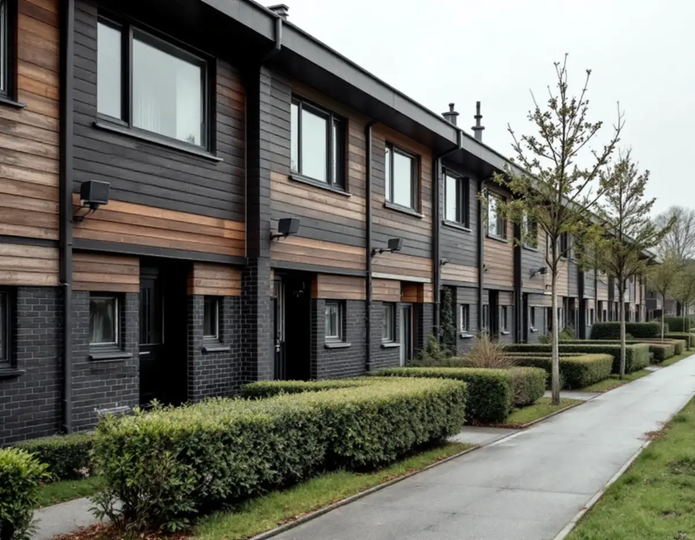
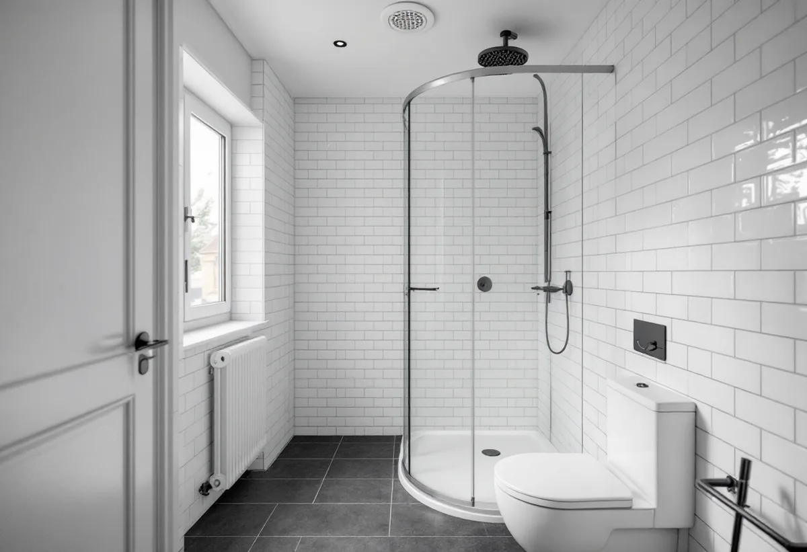
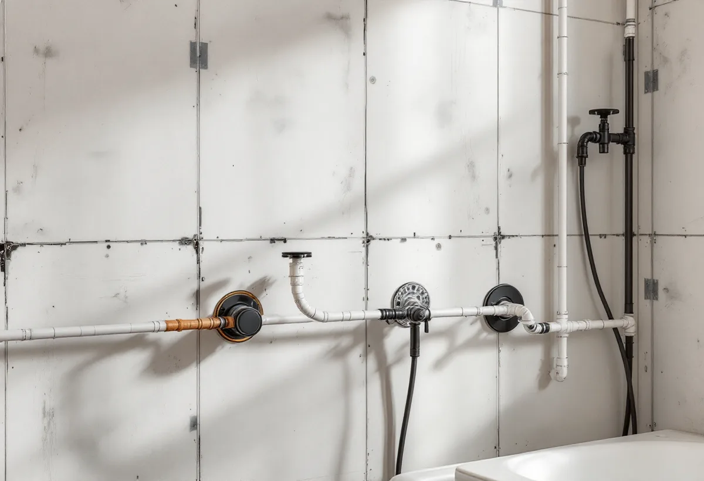

Platsbesök
Vi ser badrummet, ventilationsdonet och stammarna i huset.
I Kista och Akalla finns hundratals radhus och villor som ägs i bostadsrättsförening, och där gäller föreningens regler även om huset är ditt eget. Geal Entreprenad AB renoverar badrum i radhus och lägenheter i Kista och reder ut ansvaret innan arbetet börjar.

Enligt stadens områdesfakta för 2025 finns 404 småhus med bostadsrätt och 482 med äganderätt i Kista, och i Akalla 493 småhus med bostadsrätt och 170 med äganderätt. Stadens strategi för småhus- och villaområden beskriver att småhusen i de storskaliga stadsdelarna främst var radhus och kedjehus, men att det också förekom villor och atriumhus, till exempel i Akalla.
Husen byggdes industriellt och rationellt, i enhetliga grupper med en blandning av tegel, trä och skivor i fasaderna och oftast med platta tak eller svagt lutande pulpettak. Omsorgen om planlösningarna var stor, och goda ljusförhållanden och funktionalitet var ledord, skriver staden.

Bostadsrättslagen lägger ansvaret för lägenhetens skick på bostadsrättshavaren om inte stadgarna säger något annat. Men bostadsrättshavaren svarar inte för reparationer av ledningar för avlopp, värme, gas, el och vatten eller ventilationskanaler som föreningen har försett lägenheten med och som tjänar fler än en lägenhet.
Ett radhus räknas också som bostadsrätt hos Skatteverket, och rotavdrag ges för arbete som du ansvarar för enligt stadgarna. För att installera eller ändra ledningar för vatten och avlopp eller ventilation krävs styrelsens tillstånd. Vi läser stadgarna med dig och tar fram en beskrivning som styrelsen kan ta ställning till.
Stockholms stad beskriver frånluftsventilation som vanlig i hus byggda mellan 1961 och 1975, med centrala fläktar som drar ut luften via don i kök, badrum och toalett. Från- och tilluftsventilation, med eller utan värmeåtervinning, är vanlig i hus byggda från 1976 och framåt. Badrummets frånluftsdon är därför en del av husets system, inte bara rummets.
Installation eller väsentlig ändring av ventilationen kräver anmälan och startbesked, till exempel byte av aggregat, fläkt, kanaler eller värmeväxlare som påverkar flöden eller luftkvalitet. Monteras något utvändigt kan det bedömas som en ändring av byggnadens yttre utseende och kräva bygglov. Vi behåller donets läge och flöde och stämmer av med föreningen innan något ändras.
GVK:s branschregler säger att el i våtrum ska installeras i samråd med ett elinstallationsföretag. Genomföringar som bryter väggens tätskikt ska vara monterade och fixerade innan tätskiktet läggs, installationsrören ska vara minst 16 millimeter och monteras vinkelrätt mot väggen, och mellanrummet mot väggskivan får vara högst 2 millimeter.
I platsen för bad eller dusch får det inte finnas flexibel slang eller ventilationsrör, och genomföringar för el ska om möjligt placeras i våtzon 2. Om köket kan du läsa under köksrenovering i Kista, och om tjänsten i stort under badrumsrenovering.
GVK påminner om att minst ett hygienrum i bostaden ska vara tillgängligt och användbart för personer med nedsatt rörelseförmåga enligt byggreglerna. Branschorganisationen tipsar om att tänka på om tätskiktslösningen tål ändringar i efterhand och om väggarna bör förstärkas med kortlingar eller 15 millimeter konstruktionsplywood där stödhandtag kan komma att sitta.
Fallet mot golvbrunnen kan ge stora nivåskillnader mot intilliggande rum om man inte väljer en lämplig lösning, till exempel att bila bort en bruksläggning eller välja en lågbyggande förstärkning av underlaget. I ett radhus där man vill kunna bo kvar länge planerar vi det från början.

Vi ser badrummet, ventilationsdonet och stammarna i huset.
Vi går igenom ansvaret och tar fram underlag till styrelsen.
Rivning, VVS, el, tätskikt och ytskikt står var för sig.
VVS och elgenomföringar monteras och fixeras före tätskiktet.
Tätskikt enligt branschreglerna, sedan kakel och klinker.
Vi går igenom badrummet och lämnar dokumentationen.
I en bostadsrätt, även ett radhus i förening, ger arbetet innanför bostadens tak, väggar och golv rotavdrag när du ansvarar för det enligt stadgarna, till exempel kakel- och klinkersättning, dusch, toalett, handfat och att byta golvbrunn. Inget avdrag ges för stambyten eller för att flytta golvbrunnen.
Avdraget är högst 30 procent av arbetskostnaden och högst 50 000 kronor per person och år. Material och resor ger inget avdrag.
Rummets storlek, om något ska flyttas, vad som finns under golvet, el och ventilation, ytskikt och porslin och vad föreningen ansvarar för. Efter ett gratis platsbesök får du ett skriftligt kostnadsförslag.
Tätskikt, golvbrunn, el, VVS och intyg.
Badrumsrenovering i Stockholm →Takbyte, takbesiktning och plåtarbeten.
Takläggare i Kista →Låga tak, tätskikt och takbrunnar från 1970-talet.
Takrenovering i Kista →Gårdshus vid radhus och villor.
Attefallshus i Kista →Uterum, altan och föreningens tillstånd.
Byggföretag i Kista →Radhus, atriumhus och husgruppen.
Fasadmålning i Kista →Panel, skivor och isolering på radhus.
Fasadrenovering i Kista →Radhus och villor från 1970-talet.
Fönsterbyte i Kista →1970-talets radhusfönster.
Fönsterrenovering i Kista →Nya golv på betong i radhus och lägenheter.
Golvläggare i Kista →Golvslipning i bostadsrätt, hyresrätt och radhus.
Golvslipning i Kista →Småhus i förening och kök från 1970-talet.
Köksrenovering i Kista →1970-talets hus, asbest och ROT.
Målare i Kista →Rännor, stuprör och beslag.
Plåtslagare i Kista →Garderober, väggar och dörrar i lägenheten.
Snickare i Kista →Platta tak och pulpettak.
Takbyte i Kista →Lägenheter och radhus från 1970-talet.
Tapetsering i Kista →Tillbyggnad vid radhus och villor.
Tillbyggnad i Kista →Renovera hela huset eller lägenheten.
Totalrenovering i Kista →